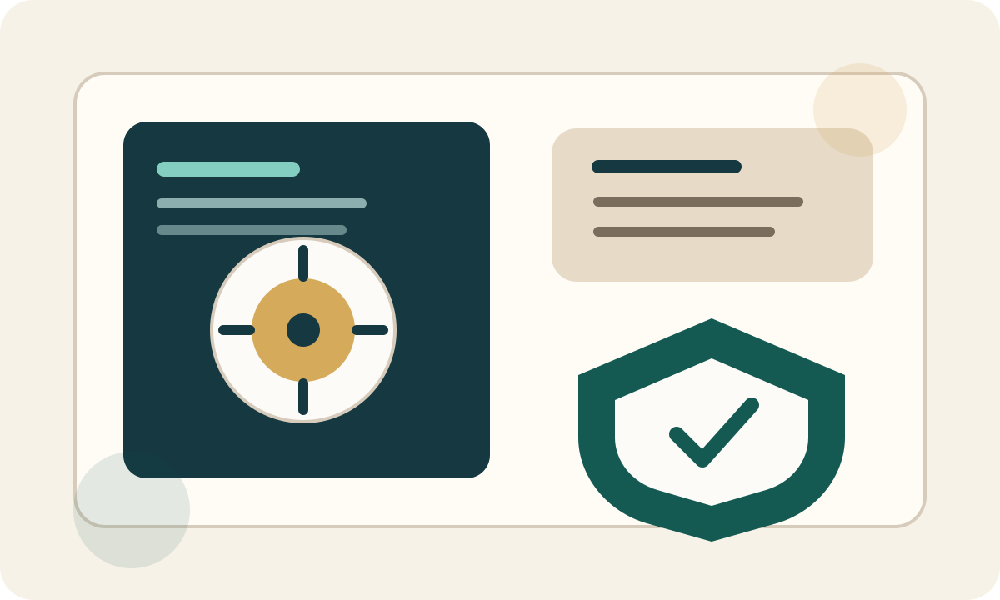

它不是“普通银行 App”，也不是只做交易的加密钱包
从官网表述看，Xapo Bank 把自己放在一个很明确的位置上：面向希望同时管理美元流动性和比特币资产的会员制银行产品。 它试图解决的不是“怎么买币”这种入门问题，而是“持有比特币之后，怎样在安全、消费和日常账户之间取得平衡”。
这也是为什么它的网站首页会同时强调几个关键词：受监管银行、比特币持有者、全球借记卡、收益、以及资产安全。 换句话说，Xapo 想做的不是高频投机界面，而是一个更偏长期持有和跨境使用的账户基础设施。

会员费、卡片与账户结构，是判断它值不值得的核心
官网会员页和 FAQ 都把年费写得很明确。Xapo 不是“零门槛开卡”，而是用会员费来换更完整的账户、卡片和服务能力。
官方 FAQ 说明卡片需要完成开户并支付会员费后才能申请，且强调虚拟卡、实体卡、外汇和 BTC cashback 等能力。
如果你只是想找一张免费海外卡，Xapo 可能并不划算；但如果你希望 BTC 和美元账户能协同使用，它的产品逻辑就更容易理解。
比较适合这三类人，不适合只想“白嫖功能”的用户
- 已经长期持有比特币，希望资金保管、消费和日常账户之间更顺手地切换的人。
- 经常跨境支付、旅行或有国际消费需求，希望账户和卡片体验更统一的人。
- 愿意为服务质量、稳定账户结构和资产安全感支付年费，而不是只比较免费提现或补贴的人。
相反，如果你的需求是“找一个零月费、没有会员费、能临时收款的小工具”，那么它的会员模式很可能一开始就不适合你。
别只盯着收益数字，先确认这些前提
Xapo 官网不同页面和搜索抓取结果里，收益数字可能会因为页面版本、地区或活动更新出现差异。比如我在 核对时，官网首页展示的是 “up to 4% APY” 和 “3.35% APY on USD deposits”，而会员页搜索摘要里又出现了不同数字。
这意味着如果你真的要注册，最稳妥的判断方式不是看二手转述，而是直接看申请页和官方 FAQ 上当前展示的条款：
- 你所在地区是否支持开户和寄送卡片。
- 当前会员费是多少，以及如何扣费。
- 卡片费用、补卡规则、ATM 取现和外汇规则有没有调整。
- 任何收益、返现或推荐活动是否有余额门槛、时间限制或资格要求。
一句话总结：Xapo 更像“付费型全球 BTC 银行账户”，不是大众免费工具
如果你的目标是把美元账户、比特币持有、卡片消费和跨境使用放到一个更完整的系统里，Xapo 的产品逻辑是成立的。 但如果你只是在找一个便宜、临时、零费用的海外账户，它就未必是性价比最高的选择。
所以看 Xapo，最关键的问题不是“它火不火”，而是“你是否真的需要这种会员制、跨境、BTC 友好的账户结构”。 只要这个问题回答清楚，是否值得注册，其实很好判断。